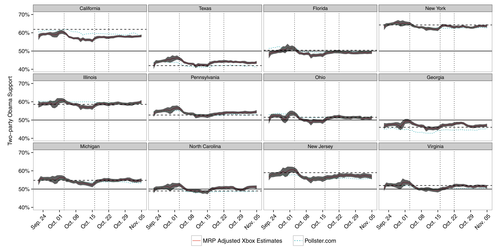
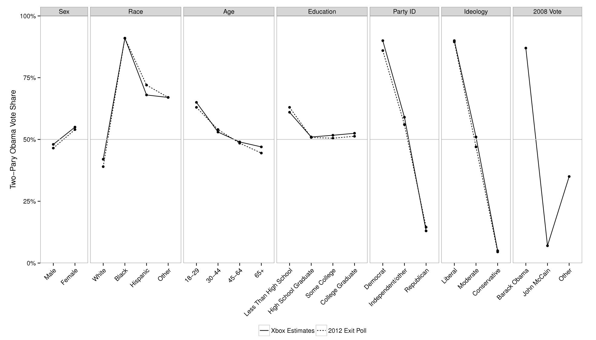
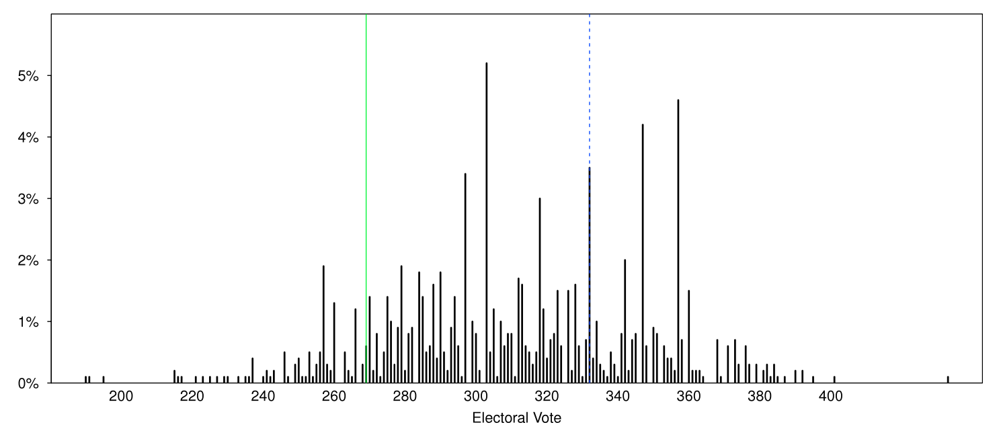

[The Presidential election of] 2016 was the largest analytics failure in US political history.
David Shor, 13 August 2020
Multilevel regression with post-stratification (MRP) is a popular way to adjust non-representative samples to better analyse opinion and other survey responses. It uses a regression model to relate individual-level survey responses to various characteristics and then rebuilds the sample to better match the population. In this way MRP can not only allow a better understanding of responses, but also allow us to analyse data that may otherwise be unusable. However, it can be a challenge to get started with MRP as the terminology may be unfamiliar, and the data requirements can be onerous.
Let us say that we have a biased survey. Maybe we conducted a survey about computers at an academic seminar, so folks with post-graduate degrees are likely over-represented. We are nonetheless interested in making claims about the population. Let us say that we found 37.5 per cent of our respondents prefer Macs. One way forward is to just ignore the bias and say that ‘37.5 per cent of people prefer Macs’. Another way is to say, well 50 per cent of our respondents with a post-graduate degree prefer Macs, and of those without a post-graduate degree, 25 per cent prefer Macs. If we knew what proportion of the broader population has post-graduate degree, let us assume 10 per cent, then we could conduct re-weighting, or post-stratification, as follows: \(0.5 \times 0.1 + 0.25 \times 0.9 = 0.275\), and so our estimate is that 27.5 per cent of people prefer Macs. MRP is a third approach, and uses a model to help do that re-weighting. So we use logistic regression to estimate the relationship between preferring Macs and highest educational attainment in our survey. We then apply that relationship to population dataset.
MRP is a handy approach when dealing with survey data. Hanretty (2020) describes how we use MRP because the alternatives are either very poor or very expensive. Essentially, it trains a model based on the survey, and then applies that trained model to another dataset. There are two main, related, advantages:
It can allow us to ‘re-weight’ in a way that includes uncertainty front-of-mind and isn’t as hamstrung by small samples. The alternative way to deal with having a small sample is to either go and gather more data or throw it away.
It can allow us to use broad surveys to speak to subsets. As Hanretty (2020) says ‘A poor alternative [to using MRP] is simply splitting a large sample into (much) smaller geographic subsamples. This is a poor alternative because there is no guarantee that a sample which is representative at the national level will be representative when it is broken down into smaller groups.’.
From a practical perspective, it tends to be less expensive to collect non-probability samples and so there are benefits of being able to use these types of data. That said, it is not a magic-bullet and the laws of statistics still apply. We will have larger uncertainty around our estimates and they will still be subject to all the usual biases. Dr Lauren Kennedy, Lecturer, Monash University, describes how we have used MRP for some time with probability surveys, and shows great potential when it comes to non-probability surveys, but the limitations of MRP are not known at the moment. It is an exciting area of research in both academia and industry.
The workflow that we need for MRP is straight-forward, but the details and tiny decisions that have to be made at each step can become overwhelming. The point to keep in mind is that we are trying to create a relationship between two datasets using a statistical model, and so we need to establish similarity between the two datasets in terms of their variables and levels. The steps are:
gather and prepare the survey dataset, thinking about what is needed for coherence with the post-stratification dataset;
gather and prepare the post-stratification dataset thinking about what is needed for coherence with the survey dataset;
model the variable of interest from the survey using independent variables and levels that are available in both the survey and the post-stratification datasets;
apply the model to the post-stratification data.
In general, MRP is a good way to accomplish specific aims, but it is not without trade-offs. If we have a good quality survey, then it may be a way to speak to disaggregated aspects of it. Or if we are concerned about uncertainty then it is a good way to think about that. If we have a biased survey, then it is a great place to start, but it is not a panacea. There is plenty of scope for exciting work from a variety of approaches:
From a more statistical perspective, there is a lot of work to do in terms of thinking through how survey design and modelling approaches interact and the extent to which we are underestimating uncertainty. It is also also very interested in thinking through the implications of small samples and uncertainty in the post-stratification dataset. There is an awful lot to do in terms of thinking through what the appropriate model is to use, and how do we even evaluate what ‘appropriate’ means here? Si (2020) would be an appropriate starting point.
There is a lot to be done from a sociology perspective in terms of survey responses and how we can better design our surveys, knowing they are going to be used for MRP and putting respect for our respondents first.
From a political science perspective, we just have very little idea of the conditions under which we will have the stable preferences and relationships that are required for MRP to be accurate, and further understanding how this relates to uncertainty in survey design. For those with political science interests, a natural next step would be to go through Lauderdale et al. (2020) or Ghitza and Gelman (2020).
Economists might be interested to think about how we could use MRP to better understand the inflation and unemployment rates at local levels.
From a statistical software side of things, we really need to develop better packages around this.
And finally, from an information perspective it is exciting to think about how we store and protect our datasets, yet retain the ability to have them correspond with each other for the purposes of MRP. How do we put the levels together in a way that is meaningful? To what extent do people appreciate uncertainty estimates and how can we better communicate these estimates?
More generally, we could pretty much use MRP anywhere we have samples. Determining the conditions under which we actually should, is the work of whole generations.
In this chapter, we begin with simulating a situation in which we pretend that we know the features of the population. We then move to a famous example of MRP that used survey data from the Xbox platform and exit poll data to forecast the 2012 US election. We will then move to examples from the Australian political situation. We will then discuss some features to be aware of when conducting MRP.
16.2 Simulation - Toddler bedtimes
16.2.1 Construct a population
To get started we will simulate some data from a population that has various properties, take a biased sample, and then conduct MRP to demonstrate how we can get those properties back. We are going to have two ‘explanatory variables’ - age-group and toilet-trained - and one dependent variable - bedtime. Bed-time will increase as age-group increases, and will be later for children that are toilet-trained, compared with those that are not. To be clear, in this example we will ‘know’ the ‘true’ features of the population, but this isn’t something that occurs when we use real data - it is just to help to explain what is happening in MRP. We are going to rely heavily on tidyverse(Wickham et al. 2019).
library(tidyverse)set.seed(853)size_of_population <-1000000population_for_mrp_example <-tibble(age_group =sample(x =c(1:3),size = size_of_population,replace =TRUE ),toilet_trained =sample(x =c(0, 1),size = size_of_population,replace =TRUE ),noise =rnorm(size_of_population, mean =0, sd =1), # No special reason for this intercept to be five; it could be anything.bed_time =5+0.5* age_group +1* toilet_trained + noise, ) |>select(-noise) |>mutate(age_group =as_factor(age_group),toilet_trained =as_factor(toilet_trained) )population_for_mrp_example |>head()
That is, as always, when we have a dataset, we first try to graph it to better understand what is going on. As there are a million points, we can just grab the first 1,000 so that it plots nicely.
And we can also work out what the ‘truth’ is for the information that we are interested in (remembering that we’d never actually know this when we move away from simulated examples).
Now we want to pretend that we have some survey that has a biased sample. We will allow that it over-samples children that are younger and those that are not toilet-trained. For instance, perhaps we gathered our sample based on the records of a paediatrician, so it is more likely that they will see this biased sample of children. We are interested in knowing what proportion of children are toilet-trained at various age-groups.
# This code based on that of Monica Alexanderset.seed(853)# Add a weight for each 'type' (has to sum to one)population_for_mrp_example <- population_for_mrp_example |>mutate(weight =case_when(toilet_trained ==0& age_group ==1~0.7, toilet_trained ==0~0.1, age_group %in%c(1, 2, 3) ~0.2 ),id =1:n() )get_these <-sample(x = population_for_mrp_example$id,size =1000,prob = population_for_mrp_example$weight )sample_for_mrp_example <- population_for_mrp_example |>filter(id %in% get_these) |>select(-weight, -id)# Clean uppoststratification_dataset <- population_for_mrp_example |>select(-weight, -id)
It is pretty clear that our sample has a different bedtime than the overall population, but let us just do the same exercise as before to look at the median, by age and toilet-trained status.
This is the ‘multilevel regression’ part of the MRP (although this isn’t really a multilevel model just to keep things simple for now).
16.2.4 Get a post-stratification dataset
Now we will use a post-stratification dataset to get some estimates of the number in each cell. We typically use a larger dataset that may more closely reflection the population. In the US a popular choice is the ACS, while in other countries we typically have to use the census.
In this simulation example, we will just take a 10 per cent sample from the population and use that as our post-stratification dataset.
In an ideal world we have individual-level data in our post-stratification dataset (that is the case above). In that world we can apply our model to each individual. The more likely situation, in reality, is that we just have counts by groups, so we are going to try to construct an estimate for each group.
At this point we can have a look at our MRP estimates (circles) along with their confidence intervals, and compare them the raw estimates from the data (squares). In this case, because we know the truth, we can also compare them to the known truth (triangles) (but that is not something we can do normally).
poststratification_dataset_grouped |>ggplot(aes(x = age_group, y = fit)) +geom_point(data = population_for_mrp_example_summarised,aes(x = age_group, y = median_bed_time, color = toilet_trained), shape =17) +geom_point(data = sample_for_mrp_example_summarized,aes(x = age_group, y = median_bed_time, color = toilet_trained), shape =15) +geom_pointrange(aes(ymin=lwr, ymax=upr, color = toilet_trained)) +labs(x ="Age-group",y ="Bed time",color ="Toilet trained") +theme_classic() +scale_color_brewer(palette ="Set1")
16.3 Case study - Xbox paper
16.3.1 Overview
One famous MRP example is Wang et al. (2015). They used data from the Xbox gaming platform to forecast the 2012 US Presidential Election.
Shoulders of giants
Andrew Gelman
Key facts about the set-up:
Data are from an opt-in poll which was available on the Xbox gaming platform during the 45 days leading up to the 2012 US presidential election (Obama and Romney).
Each day there were three to five questions, including voter intention: ‘If the election were held today, who would you vote for?’.
Respondents were allowed to answer at most once per day.
First-time respondents were asked to provide information about themselves, including their sex, race, age, education, state, party ID, political ideology, and who they voted for in the 2008 presidential election.
In total, 750,148 interviews were conducted, with 345,858 unique respondents - over 30,000 of whom completed five or more polls.
Young men dominate the Xbox population: 18-to-29-year-olds comprise 65 per cent of the Xbox dataset, compared to 19 per cent in the exit poll; and men make up 93 per cent of the Xbox sample but only 47 per cent of the electorate.
16.3.2 Model
Given the structure of the US electorate, they use a two-stage modelling approach. The details don’t really matter too much, but essentially they model how likely a respondent is to vote for Obama, given various information such as state, education, sex, etc:
Having a trained model that considers the effect of these various independent variables on support for the candidates, they now post-stratify, where each of these ‘cell-level estimates are weighted by the proportion of the electorate in each cell and aggregated to the appropriate level (i.e., state or national).’
This means that they need cross-tabulated population data. In general, the census would have worked, or one of the other large surveys available in the US, but the difficulty is that the variables need to be available on a cross-tab basis. As such, they use exit polls (not a viable option for most other countries).
They make state-specific estimates by post-stratifying to the features of each state (Figure 16.1).

Figure 16.1: Post-stratified estimates for each state based on the Xbox survey and MRP
Similarly, they can examine demographic-differences (Figure 16.2).

Figure 16.2: Post-stratified estimates on a demographic basis based on the Xbox survey and MRP
Finally, they convert their estimates into electoral college estimates (Figure 16.3).

Figure 16.3: Post-stratified estimates of electoral college outcomes based on the Xbox survey and MRP
16.4 Simulation - Australian voting
16.4.1 Overview
As a reminder, the workflow that we use is:
read in the poll;
model the poll;
read in the post-stratification data; and
apply the model to the post-stratification data.
In the earlier example, we did not really do too much in the modelling step, and despite the name ‘multilevel modelling with post-stratification’, we did not actually use a multilevel model. There is nothing that says you have to use a multilevel model, but a lot of situations will have circumstances such that it is not likely to do any worse. To be clear, this means that although we have individual-level data, there is some grouping of the individuals that we’ll take advantage of. For instance, in the case of trying to model elections, usually districts/divisions/electorates/ridings/etc exist within provinces/states so it would likely make sense to, at least, include a coefficient that adjusts the intercept for each province.
In this section we are simulate another dataset and then fit a few different models to it. We are going to draw on the Australian elections set-up. In Australia we have a parliamentary system, with 151 seats in the parliament, one for each electorate. These electorates are grouped within six states and two territories. There are two major parties - the Australian Labor Party (ALP) and the Liberal Party (LP). Somewhat confusingly, the Liberal party are actually the conservative, right-wing party, while the Labor party are the progressive, left-wing, party.
16.4.2 Construct a survey
To move us slightly closer to reality, we are going to simulate a survey (rather than sample from a population as we did earlier) and then post-stratify it using real data. The dependent variable is ‘supports_ALP’, which is a binary variable - either 0 or 1. We will just start with three independent variables here:
‘gender’, which is either ‘female’ or ‘male’ (as that is what is available from the Australian Bureau of Statistics);
‘age_group’, which is one of four groups: ‘ages 18 to 29’, ‘ages 30 to 44’, ‘ages 45 to 59’, ‘ages 60 plus’;
‘state’, which is one of eight integers: 1 - 8 (inclusive).
library(tidyverse)set.seed(853)size_of_sample_for_australian_polling <-2000sample_for_australian_polling <-tibble(age_group =sample(x =c(0:3), size = size_of_sample_for_australian_polling,replace =TRUE ),gender =sample(x =c(0:1),size = size_of_sample_for_australian_polling,replace =TRUE ),state =sample(x =c(1:8),size = size_of_sample_for_australian_polling,replace =TRUE ),noise =rnorm(size_of_sample_for_australian_polling, mean =0, sd =1), support_alp =1+0.5* age_group +0.5* gender +0.01* state + noise ) # Normalize the outcome variablesample_for_australian_polling <- sample_for_australian_polling |>mutate(support_alp =if_else(support_alp >median(support_alp, na.rm =TRUE), 'Supports ALP', 'Does not') )# Clean up the simulated datasample_for_australian_polling <- sample_for_australian_polling |>mutate(age_group =case_when( age_group ==0~'Ages 18 to 29', age_group ==1~'Ages 30 to 44', age_group ==2~'Ages 45 to 59', age_group ==3~'Ages 60 plus',TRUE~'Problem' ),gender =case_when( gender ==0~'Male', gender ==1~'Female',TRUE~'Problem' ),state =case_when( state ==1~'Queensland', state ==2~'New South Wales', state ==3~'Australian Capital Territory', state ==4~'Victoria', state ==5~'Tasmania', state ==6~'Northern Territory', state ==7~'South Australia', state ==8~'Western Australia',TRUE~'Problem' ), ) |>select(-noise)# Tidy the classsample_for_australian_polling <- sample_for_australian_polling |>mutate(across(c(age_group, gender, state, support_alp), as_factor))sample_for_australian_polling |>head()
# A tibble: 6 × 4
age_group gender state support_alp
<fct> <fct> <fct> <fct>
1 Ages 18 to 29 Female South Australia Supports ALP
2 Ages 60 plus Male South Australia Supports ALP
3 Ages 30 to 44 Male Victoria Does not
4 Ages 18 to 29 Male Tasmania Does not
5 Ages 18 to 29 Female Victoria Does not
6 Ages 18 to 29 Male Queensland Supports ALP
Finally, we want our survey to over-sample females, so we will just get rid of 300 males.
This polling data was generated to make both males and older people less likely to vote for the ALP; and females and younger people more likely to vote for the Labor Party. Females are over-sampled. As such, we should have an ALP skew on the dataset. We are going to use the gtsummary package to quickly make a summary table (Arel-Bundock 2021).
Now we’d like to see if we can get our results back (we should find females less likely than males to vote for Australian Labor Party and that people are less likely to vote Australian Labor Party as they get older). Our model is:
ADD THE MODEL.
This model says that the probability that some person, \(j\), will vote for the Australian Labor Party depends on their gender and their age-group. Based on our simulated data, we would like older age-groups to be less likely to vote for the Australian Labor Party and for males to be less likely to vote for the Australian Labor Party.
Essentially we have got our inputs back. Our dependent variable is a binary, and so we used logistic regression so the results are a little more difficult to interpret.
16.4.4 Post-stratify
Now we’d like to see if we can use what we found in the poll to get an estimate for each state based on their demographic features.
First read in some real demographic data, on a state basis, from the ABS.
At this point, we have got a decision to make because we need the variables to be the same in the survey and the post-stratification dataset, but here the state abbreviations have been used, while in the survey, the full names were used. We will change the post-stratification dataset because the survey data has already modelled.
post_strat_census_data <- post_strat_census_data |>mutate(state =case_when( state =='ACT'~'Australian Capital Territory', state =='NSW'~'New South Wales', state =='NT'~'Northern Territory', state =='QLD'~'Queensland', state =='SA'~'South Australia', state =='TAS'~'Tasmania', state =='VIC'~'Victoria', state =='WA'~'Western Australia',TRUE~"Problem" ),age_group =case_when( age_group =='ages18to29'~'Ages 18 to 29', age_group =='ages30to44'~'Ages 30 to 44', age_group =='ages45to59'~'Ages 45 to 59', age_group =='ages60plus'~'Ages 60 plus',TRUE~"Problem" ) )
We are just going to do some rough forecasts. For each gender and age-group we want the relevant coefficient in the example data and we can construct the estimates.
# A tibble: 8 × 2
state alp_predict
<chr> <dbl>
1 Australian Capital Territory 0.551
2 New South Wales 0.487
3 Northern Territory 0.546
4 Queensland 0.491
5 South Australia 0.403
6 Tasmania 0.429
7 Victoria 0.521
8 Western Australia 0.460
We now have post-stratified estimates for each state Our model has a fair few weaknesses. For instance, small cell counts are going to be problematic. And our approach ignores uncertainty, but now that we have something working we can complicate it.
16.4.5 Improving the model
We’d like to address some of the major issues with our approach, specifically being able to deal with small cell counts, and also taking better account of uncertainty. As we are dealing with survey data, prediction intervals or something similar are critical, and it is not appropriate to only report central estimates. To do this we’ll use the same broad approach as before, but just improve the model. We are going to change to a Bayesian model and use the rstanarm package (Goodrich et al. 2020).
Now, using the same basic model as before, but in a Bayesian setting.
library(rstanarm)
Loading required package: Rcpp
This is rstanarm version 2.21.3
- See https://mc-stan.org/rstanarm/articles/priors for changes to default priors!
- Default priors may change, so it's safest to specify priors, even if equivalent to the defaults.
- For execution on a local, multicore CPU with excess RAM we recommend calling
As before, we’d like an estimate for each state based on their demographic features. We are just going to do some rough forecasts. For each gender and age-group we want the relevant coefficient in the example data and we can construct the estimates (this code is from Monica Alexander). We are going to use tidybayes for this (Kay 2020).
Warning: `fitted_draws` and `add_fitted_draws` are deprecated as their names were confusing.
Use [add_]epred_draws() to get the expectation of the posterior predictive.
Use [add_]linpred_draws() to get the distribution of the linear predictor.
For example, you used [add_]fitted_draws(..., scale = "response"), which
means you most likely want [add_]epred_draws(...).
`summarise()` has grouped output by 'state'. You can override using the
`.groups` argument.
post_stratified_estimates
# A tibble: 8 × 4
state mean lower upper
<chr> <dbl> <dbl> <dbl>
1 Australian Capital Territory 0.550 0.494 0.604
2 New South Wales 0.486 0.429 0.544
3 Northern Territory 0.544 0.483 0.607
4 Queensland 0.491 0.432 0.548
5 South Australia 0.412 0.361 0.464
6 Tasmania 0.429 0.372 0.487
7 Victoria 0.519 0.453 0.583
8 Western Australia 0.460 0.401 0.520
We now have post-stratified estimates for each division. Our new Bayesian approach will enable us to think more deeply about uncertainty. We could complicate this in a variety of ways including adding more coefficients (but remember that we’d need to get new cell counts), or adding some layers.
One interesting aspect is that our multilevel approach will allow us to deal with small cell counts by borrowing information from other cells. Even if we were to remove most of the, say, 18-to-29-year-old, male respondents from Tasmania our model would still provide estimates. It does this by pooling, in which the effect of these young, male, Tasmanians is partially determined by other cells that do have respondents.
There are many interesting aspects that we may like to communicate to others. For instance, we may like to show how the model is affecting the results. We can make a graph that compares the raw estimate with the model estimate.
Similarly, we may like to plot the distribution of the coefficients. We can work out which coefficients to be pass to gather_draws with tidybayes::get_variables(model; in this example we passed ‘b_.’, but that will not always be the case.
The US election has a lot of features that are unique to the US, but the model that we are going to build here is going to be fairly generic and, largely a generalization of the earlier model for the Australian election. One good thing about forecasting the US election is that there is a lot of data around. In this case we can use survey data from the Democracy Fund Voter Study Group.1 They conducted polling in the lead-up to the US election and make this publicly available after registration. We will use the Integrated Public Use Microdata Series (IPUMS), to access the 2018 American Community Survey (ACS) as a post-stratification dataset. We will use state, age-group, gender, and education as explanatory variables.
16.5.1 Survey data
The first step is that we need to actually get the survey data. Go to their website: https://www.voterstudygroup.org and then you are looking for ‘Nationscape’ and then a button along the lines of ‘Get the latest Nationscape data’. To get the dataset, you need to fill out a form, which they will process and then email you. There is a real person on the other side of this form, and so your request could take a few days.
Once you get access you will want to download the .dta files. Nationscape conducted many surveys and so there are many files. The filename is the reference date, and so ‘ns20200625’ refers to 25 June 2020, which is the one that we will use here.
We can read in ‘.dta’ files using the haven package (Wickham and Miller 2020). This code is based on that of Alen Mitrovski, Xiaoyan Yang, Matthew Wankiewicz: https://github.com/matthewwankiewicz/US_election_forecast.
library(haven)library(tidyverse)raw_nationscape_data <-read_dta(here::here("dont_push/ns20200625.dta"))# The Stata format separates labels so reunite thoseraw_nationscape_data <- labelled::to_factor(raw_nationscape_data)# Just keep relevant variablesnationscape_data <- raw_nationscape_data |>select(vote_2020, gender, education, state, age)# For simplicity, remove anyone undecided or planning to vote for someone other than Biden/Trump and make vote a binary variable: 1 for Biden, 0 for Trump.nationscape_data <- nationscape_data |>filter(vote_2020 =="Joe Biden"| vote_2020 =="Donald Trump") |>mutate(vote_biden =if_else(vote_2020 =="Joe Biden", 1, 0)) |>select(-vote_2020)# Create the dependent variables by grouping the existing variablesnationscape_data <- nationscape_data |>mutate(age_group =case_when( # case_when works in order and exits when there's a match age <=29~'age_18-29', age <=44~'age_30-44', age <=59~'age_45-59', age >=60~'age_60_or_more',TRUE~'Trouble' ),gender =case_when( gender =="Female"~'female', gender =="Male"~'male',TRUE~'Trouble' ),education_level =case_when( education =="3rd Grade or less"~"High school or less", education =="Middle School - Grades 4 - 8"~"High school or less", education =="Completed some high school"~"High school or less", education =="High school graduate"~"High school or less", education =="Other post high school vocational training"~"Some post secondary", education =="Completed some college, but no degree"~"Some post secondary", education =="Associate Degree"~"Post secondary or higher", education =="College Degree (such as B.A., B.S.)"~"Post secondary or higher", education =="Completed some graduate, but no degree"~"Post secondary or higher", education =="Masters degree"~"Graduate degree", education =="Doctorate degree"~"Graduate degree",TRUE~'Trouble' ) ) |>select(-education, -age)tests <- nationscape_data |>mutate(test = stringr::str_detect(age_group, 'Trouble'),test =if_else(test ==TRUE, TRUE, stringr::str_detect(education_level, 'Trouble')),test =if_else(test ==TRUE, TRUE, stringr::str_detect(gender, 'Trouble')) ) |>filter(test ==TRUE)if(nrow(tests) !=0) {print("Check nationscape_data") } else {rm(tests) }nationscape_data |>head()
# A tibble: 6 × 5
gender state vote_biden age_group education_level
<chr> <chr> <dbl> <chr> <chr>
1 female WI 0 age_45-59 Post secondary or higher
2 female VA 0 age_45-59 Post secondary or higher
3 female TX 0 age_60_or_more High school or less
4 female WA 0 age_45-59 High school or less
5 female MA 1 age_18-29 Some post secondary
6 female TX 1 age_30-44 Some post secondary
As we have seen, one of the most difficult aspects with MRP is ensuring consistency between the datasets. In this case, we need to do some work to make the variables consistent.
# This code is very directly from Alen Mitrovski, Xiaoyan Yang, and Matthew Wankiewicz.# Format state names so the whole state name is written out, to match IPUMS datastates_names_and_abbrevs <-tibble(stateicp = state.name, state = state.abb)nationscape_data <- nationscape_data |>left_join(states_names_and_abbrevs)
Joining, by = "state"
rm(states_names_and_abbrevs)# Make lowercase to match IPUMS datanationscape_data <- nationscape_data |>mutate(stateicp =tolower(stateicp))# Replace NAs with DCnationscape_data$stateicp <-replace_na(nationscape_data$stateicp, "district of columbia")# Tidy the classnationscape_data <- nationscape_data |>mutate(across(c(gender, stateicp, education_level, age_group), as_factor))# Save datawrite_csv(nationscape_data, "outputs/data/polling_data.csv")nationscape_data |>head()
# A tibble: 6 × 6
gender state vote_biden age_group education_level stateicp
<fct> <chr> <dbl> <fct> <fct> <fct>
1 female WI 0 age_45-59 Post secondary or higher wisconsin
2 female VA 0 age_45-59 Post secondary or higher virginia
3 female TX 0 age_60_or_more High school or less texas
4 female WA 0 age_45-59 High school or less washington
5 female MA 1 age_18-29 Some post secondary massachusetts
6 female TX 1 age_30-44 Some post secondary texas
16.5.2 Post-stratification data
We have a lot of options for a dataset to post-stratify by and there are various considerations. We are after a dataset that is better quality (however that is to be defined), and likely larger. From a strictly data perspective, the best choice would probably be something like the Cooperative Congressional Election Study (CCES), however for whatever reason that is only released after the election and so it is not a reasonable choice. Wang et al. (2015) use exit poll data, but again that is only available after the election.
In most countries we’d be stuck using the census, which is quite large, but likely out-of-date. Luckily in the US we have the opportunity to use the American Community Survey (ACS) which asks analogous questions to a census, is conducted every month, and over the course of a year, we end up with a few million responses. In this case we are going to access the ACS through IPUMS.
To do this go to the IPUMS website - https://ipums.org - and we are looking for something like IPUMS USA and then ‘get data’. Create an account, if you need to. That’ll take a while to process. But once you have an account, go to ‘Select Samples’ and de-select everything apart from the 2019 ACS. Then we need to get the variables that we are interested in. From the household we want ‘STATEICP’, then in person we want ‘SEX’, ‘AGE’, ‘EDUC’. Once everything is selected, ‘view cart’, and we want to be careful to change the ‘data format’ to ‘.dta’ (there’s nothing wrong with the other formats, but we have just already got code earlier to deal with that type). Briefly just check how many rows and columns you are requesting. It should be around a million rows, and around ten to twenty columns. If it is much more than 300MB then maybe just see if you have accidentally selected something that you don’t need. Submit the request and within a day, you should get an email saying that your data can be downloaded. It should only take 30 minutes or so, but if you don’t get an email within a day then check again the size of the dataset, and customize the sample size to reduce the size initially.
In any case let us tidy up the data.
# Again, closely following code from Alen Mitrovski, Xiaoyan Yang, and Matthew Wankiewicz.library(haven)library(tidyverse)raw_poststrat_data <-read_dta(here::here("dont_push/usa_00004.dta"))# The Stata format separates labels so reunite thoseraw_poststrat_data <- labelled::to_factor(raw_poststrat_data)head(raw_poststrat_data)
# A tibble: 6 × 28
year sample serial cbser…¹ hhwt cluster region state…² strata gq pernum
<fct> <fct> <dbl> <dbl> <dbl> <dbl> <fct> <fct> <dbl> <fct> <dbl>
1 2018 2018 acs 2 2.02e12 392. 2.02e12 east … alabama 190001 othe… 1
2 2018 2018 acs 7 2.02e12 94.1 2.02e12 east … alabama 40001 grou… 1
3 2018 2018 acs 13 2.02e12 83.7 2.02e12 east … alabama 130301 othe… 1
4 2018 2018 acs 18 2.02e12 57.5 2.02e12 east … alabama 100001 grou… 1
5 2018 2018 acs 23 2.02e12 157. 2.02e12 east … alabama 190001 grou… 1
6 2018 2018 acs 28 2.02e12 157. 2.02e12 east … alabama 220001 othe… 1
# … with 17 more variables: perwt <dbl>, sex <fct>, age <fct>, marst <fct>,
# race <fct>, raced <fct>, hispan <fct>, hispand <fct>, bpl <fct>,
# bpld <fct>, citizen <fct>, educ <fct>, educd <fct>, empstat <fct>,
# empstatd <fct>, labforce <fct>, inctot <dbl>, and abbreviated variable
# names ¹cbserial, ²stateicp
# ℹ Use `colnames()` to see all variable names
raw_poststrat_data$age <-as.numeric(raw_poststrat_data$age)poststrat_data <- raw_poststrat_data |>filter(inctot <9999999) |>filter(age >=18) |>mutate(gender = sex) |>mutate(age_group =case_when( # case_when works in order and exits when there's a match age <=29~'age_18-29', age <=44~'age_30-44', age <=59~'age_45-59', age >=60~'age_60_or_more',TRUE~'Trouble' ),education_level =case_when( educd =="nursery school, preschool"~"High school or less", educd =="kindergarten"~"High school or less", educd =="grade 1"~"High school or less", educd =="grade 2"~"High school or less", educd =="grade 3"~"High school or less", educd =="grade 4"~"High school or less", educd =="grade 5"~"High school or less", educd =="grade 6"~"High school or less", educd =="grade 7"~"High school or less", educd =="grade 8"~"High school or less", educd =="grade 9"~"High school or less", educd =="grade 10"~"High school or less", educd =="grade 11"~"High school or less", educd =="12th grade, no diploma"~"High school or less", educd =="regular high school diploma"~"High school or less", educd =="ged or alternative credential"~"High school or less", educd =="some college, but less than 1 year"~"Some post secondary", educd =="1 or more years of college credit, no degree"~"Some post secondary", educd =="associate's degree, type not specified"~"Post secondary or higher", educd =="bachelor's degree"~"Post secondary or higher", educd =="master's degree"~"Graduate degree", educd =="professional degree beyond a bachelor's degree"~"Graduate degree", educd =="doctoral degree"~"Graduate degree", educd =="no schooling completed"~"High school or less",TRUE~'Trouble' ) )# Just keep relevant variablespoststrat_data <- poststrat_data |>select(gender, age_group, education_level, stateicp)# Tidy the classpoststrat_data <- poststrat_data |>mutate(across(c(gender, stateicp, education_level, age_group), as_factor))# Save datawrite_csv(poststrat_data, "outputs/data/us_poststrat.csv")poststrat_data |>head()
# A tibble: 6 × 4
gender age_group education_level stateicp
<fct> <fct> <fct> <fct>
1 female age_18-29 Some post secondary alabama
2 female age_60_or_more Some post secondary alabama
3 male age_45-59 Some post secondary alabama
4 male age_30-44 High school or less alabama
5 female age_60_or_more High school or less alabama
6 male age_30-44 High school or less alabama
This dataset is on an individual level. So we’ll create counts of each sub-cell, and then proportions by state.
# A tibble: 6 × 6
stateicp gender age_group education_level n prop
<fct> <fct> <fct> <fct> <int> <dbl>
1 connecticut male age_18-29 Some post secondary 149 0.0260
2 connecticut male age_18-29 High school or less 232 0.0404
3 connecticut male age_18-29 Post secondary or higher 96 0.0167
4 connecticut male age_18-29 Graduate degree 25 0.00436
5 connecticut male age_60_or_more Some post secondary 142 0.0248
6 connecticut male age_60_or_more High school or less 371 0.0647
16.5.3 Model
We are going to use logistic regression to estimate a model where the binary of support for Biden is explained by gender, age-group, education-level, and state. We are going to do this in a Bayesian framework using rstanarm(Goodrich et al. 2020). There are a variety of reasons for using rstanarm here, but the main one is that Stan is pre-compiled which eases some of the computer set-up issues that we may otherwise have. A great further resource about implementing MRP with rstanarm is Kennedy and Gabry (2020).
There are a variety of options here that we have largely unthinkingly set, and exploring the effect of these would be a good idea, but for now we can just have a quick look at the model.
modelsummary::get_estimates(us_election_model)
term effect estimate conf.level
1 (Intercept) fixed 0.27591651 0.95
2 gendermale fixed -0.54094841 0.95
3 age_groupage_60_or_more fixed 0.04886803 0.95
4 age_groupage_18-29 fixed 0.87817445 0.95
5 age_groupage_30-44 fixed 0.12455081 0.95
6 education_levelHigh school or less fixed -0.35080948 0.95
7 education_levelSome post secondary fixed -0.14970941 0.95
8 education_levelGraduate degree fixed -0.21988079 0.95
9 Sigma[stateicp:(Intercept),(Intercept)] random 0.08002654 0.95
conf.low conf.high prior.distribution prior.location prior.scale group
1 0.09881273 0.443488264 normal 0 1
2 -0.65076458 -0.427749949 normal 0 1
3 -0.10689062 0.205923558 normal 0 1
4 0.69861948 1.062641968 normal 0 1
5 -0.03128652 0.282186807 normal 0 1
6 -0.50599888 -0.196940827 normal 0 1
7 -0.29626577 0.009925954 normal 0 1
8 -0.38962001 -0.041774456 normal 0 1
9 0.03458639 0.172063071 <NA> NA NA
# The default usage of modelsummary requires statistics that we don't have.# Uncomment the following line if you want to look at what is available and specify your own:# modelsummary::get_estimates(us_election_model)modelsummary::modelsummary(us_election_model,statistic =c('conf.low', 'conf.high') )
Warning:
`modelsummary` uses the `performance` package to extract goodness-of-fit
statistics from models of this class. You can specify the statistics you wish
to compute by supplying a `metrics` argument to `modelsummary`, which will then
push it forward to `performance`. Acceptable values are: "all", "common",
"none", or a character vector of metrics names. For example: `modelsummary(mod,
metrics = c("RMSE", "R2")` Note that some metrics are computationally
expensive. See `?performance::performance` for details.
This warning appears once per session.
Warning: `fitted_draws` and `add_fitted_draws` are deprecated as their names were confusing.
Use [add_]epred_draws() to get the expectation of the posterior predictive.
Use [add_]linpred_draws() to get the distribution of the linear predictor.
For example, you used [add_]fitted_draws(..., scale = "response"), which
means you most likely want [add_]epred_draws(...).
`summarise()` has grouped output by 'stateicp'. You can override using the
`.groups` argument.
And we can have a look at our estimates, if we like.
biden_support_by_state |>ggplot(aes(y = mean, x = stateicp, color ="MRP estimate")) +geom_point() +geom_errorbar(aes(ymin = lower, ymax = upper), width =0) +geom_point(data = nationscape_data |>group_by(stateicp, vote_biden) |>summarise(n =n()) |>group_by(stateicp) |>mutate(prop = n/sum(n)) |>filter(vote_biden==1), aes(y = prop, x = stateicp, color ='Nationscape raw data')) +geom_hline(yintercept =0.5, linetype ='dashed') +labs(x ='State',y ='Estimated proportion support for Biden',color ='Source') +theme_classic() +scale_color_brewer(palette ='Set1') +coord_flip()
`summarise()` has grouped output by 'stateicp'. You can override using the
`.groups` argument.
16.6 Exercises and tutorial
Exercises
(Plan) Consider the following scenario: TBD. Please sketch out what that dataset could look like and then sketch a graph that you could build to show all observations.
(Simulate) Please further consider the scenario described and simulate the situation with every variable independent of each other.
(Acquire) Please describe three possible sources of such a dataset.
(Explore) Please use ggplot2 to build the graph that you sketched.
(Communicate) Please write two paragraphs about what you did.
Please explain what MRP is to someone who has university-education, but who has not necessarily taken any statistics, so you will need to explain any technical terms that you use, and be clear about strengths and weaknesses (write at least three paragraphs).
With respect to Wang et al. (2015): Why is this paper interesting? What do you like about this paper? What do you wish it did better? To what extent can you reproduce this paper? (Write at least four paragraphs).
With respect to Wang et al. (2015), what is not a feature they mention election forecasts need?
Explainable.
Accurate.
Cost-effective.
Relevant.
Timely.
With respect to Wang et al. (2015), what is a weakness of MRP?
Detailed data requirement.
Allows use of biased data.
Expensive to conduct.
With respect to Wang et al. (2015), what is concerning about the Xbox sample?
Non-representative.
Small sample size.
Multiple responses from the same respondent.
We are interested in studying how voting intentions in the 2020 US presidential election vary by an individual’s income. We set up a logistic regression model to study this relationship. In this study, what are some possible independent variables (select all)?
Whether the respondent is registered to vote (yes/no).
Whether the respondent is going to vote for Biden (yes/no).
The race of the respondent (white/not white).
The respondent’s marital status (married/not).
Please think about Cohn (2016) Why is this type of exercise not carried out more? Why do you think that different groups, even with the same background and level of quantitative sophistication, could have such different estimates even when they use the same data? (Write at least four paragraphs).
When we think about multilevel regression with post-stratification, what are the key assumptions that we are making? (Write at least four paragraphs).
I train a model based on a survey, and then post-stratify it using the 2020 ACS dataset. What are some of the practical considerations that I may have to contend when I am doing this? (Write at least four paragraphs).
If I have a model output from lm() called ‘my_model_output’ how can I use modelsummary to display the output (assume the package has been loaded) (select all)?
modelsummary::modelsummary(my_model_output)
modelsummary(my_model_output)
my_model_output |> modelsummary()
my_model_output |> modelsummary(statistic = NULL)
Which of the following are examples of linear models (select all)?
lm(y ~ x_1 + x_2 + x_3, data = my_data)
lm(y ~ x_1 + x_2^2 + x_3, data = my_data)
lm(y ~ x_1 * x_2 + x_3, data = my_data)
lm(y ~ x_1 + x_1^2 + x_2 + x_3, data = my_data)
Consider a situation in which you have a survey dataset with these age-groups: 18-29; 30-44; 45- 60; and 60+. And a post-stratification dataset with these age-groups: 18-24; 25-29; 30-34; 35-39; 40-44; 45-49; 50-54; 55-59; and 60+. What approach would you take to bringing these together? [Please write a paragraph.]
Consider a situation in which you again have a survey dataset with these age-groups: 18-29; 30-44; 45- 60; and 60+. But this time the post-stratification dataset has these age-groups: 18-34; 35-49; 50-64; and 65+. What approach would you take to bringing these together? (Write at least one paragraph).
Tutorial
In a similar manner to Ghitza and Gelman (2020) pretend you have got access to a US voter file record from a private company. You train a model on the 2020 US CCES, and post-stratify it, on an individual-basis, based on that voter file. a. Could you please put-together a datasheet for the voter file dataset following Gebru et al. (2021)? As a reminder, datasheets accompany datasets and document ‘motivation, composition, collection process, recommended uses,’ among other aspects. b. Could you also please put together a model card for your model, following Mitchell et al. (2019)? As a reminder, model cards are deliberately straight-forward one- or two-page documents that report aspects such as: model details; intended use; metrics; training data; ethical considerations; as well as caveats and recommendations (Mitchell et al. 2019). c. Could you please discuss three ethical aspects around the features that you are using in your model? [Please write a paragraph or two for each point.] d. Could you please detail the protections that you would put in place in terms of the dataset, the model, and the predictions?
Paper
At about this point, Paper Five in Appendix C would be appropriate.
Arel-Bundock, Vincent. 2021. modelsummary: Summary Tables and Plots for Statistical Models and Data: Beautiful, Customizable, and Publication-Ready. https://CRAN.R-project.org/package=modelsummary.
Bates, Douglas, Martin Mächler, Ben Bolker, and Steve Walker. 2015. “Fitting Linear Mixed-Effects Models Using lme4.”Journal of Statistical Software 67 (1): 1–48. https://doi.org/10.18637/jss.v067.i01.
Gebru, Timnit, Jamie Morgenstern, Briana Vecchione, Jennifer Wortman Vaughan, Hanna Wallach, Hal Daumé III, and Kate Crawford. 2021. “Datasheets for Datasets.”Communications of the ACM 64 (12): 86–92. https://doi.org/10.1145/3458723.
Ghitza, Yair, and Andrew Gelman. 2020. “Voter Registration Databases and MRP: Toward the Use of Large-Scale Databases in Public Opinion Research.”Political Analysis 28 (4): 507–31. https://doi.org/10.1017/pan.2020.3.
Goodrich, Ben, Jonah Gabry, Imad Ali, and Sam Brilleman. 2020. “rstanarm: Bayesian applied regression modeling via Stan.”https://mc-stan.org/rstanarm.
Green, Eric. 2020. “Nivi Research: Mister P helps us understand vaccine hesitancy.”https://doi.org/2020-12-08.
Hanretty, Chris. 2020. “An Introduction to Multilevel Regression and Post-Stratification for Estimating Constituency Opinion.”Political Studies Review 18 (4): 630–45. https://doi.org/10.1177/1478929919864773.
Lauderdale, Benjamin, Delia Bailey, Jack Blumenau, and Douglas Rivers. 2020. “Model-Based Pre-Election Polling for National and Sub-National Outcomes in the US and UK.”International Journal of Forecasting 36 (2): 399–413. https://doi.org/10.1016/j.ijforecast.2019.05.012.
Mitchell, Margaret, Simone Wu, Andrew Zaldivar, Parker Barnes, Lucy Vasserman, Ben Hutchinson, Elena Spitzer, Inioluwa Deborah Raji, and Timnit Gebru. 2019. “Model Cards for Model Reporting.”Proceedings of the Conference on Fairness, Accountability, and Transparency, January. https://doi.org/10.1145/3287560.3287596.
Si, Yajuan. 2020. “On the Use of Auxiliary Variables in Multilevel Regression and Poststratification.”https://arxiv.org/abs/2011.00360.
Wang, Wei, David Rothschild, Sharad Goel, and Andrew Gelman. 2015. “Forecasting Elections with Non-Representative Polls.”International Journal of Forecasting 31 (3): 980–91. https://doi.org/10.1016/j.ijforecast.2014.06.001.
Wickham, Hadley, Mara Averick, Jenny Bryan, Winston Chang, Lucy D’Agostino McGowan, Romain François, Garrett Grolemund, et al. 2019. “Welcome to the tidyverse.”Journal of Open Source Software 4 (43): 1686. https://doi.org/10.21105/joss.01686.